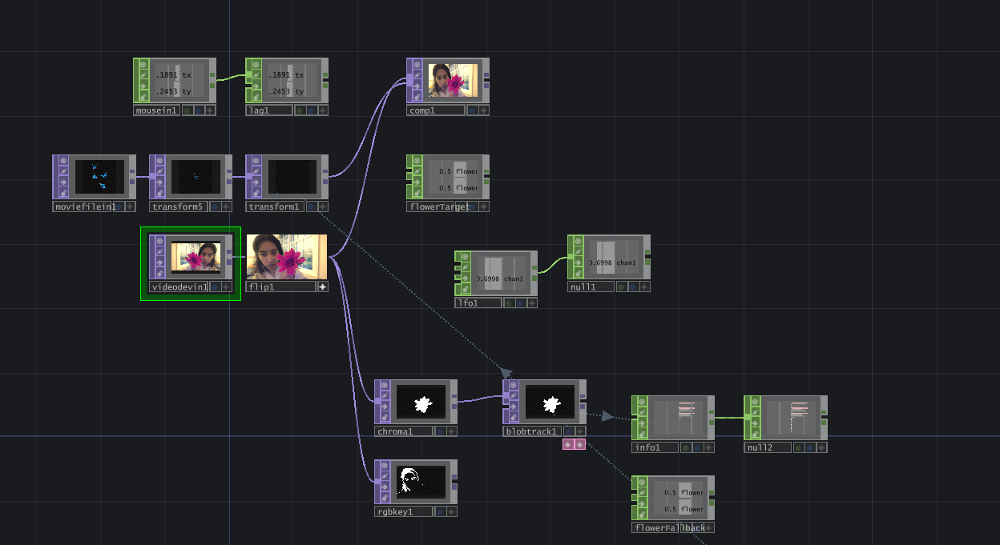
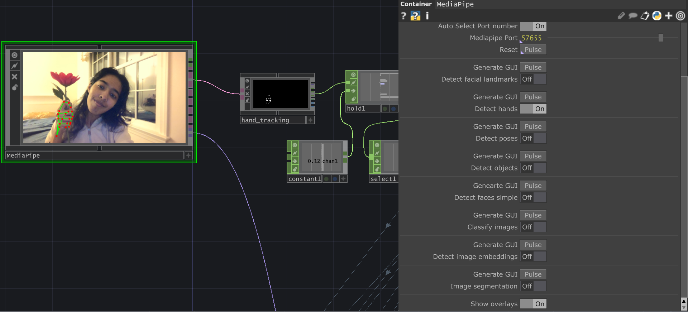
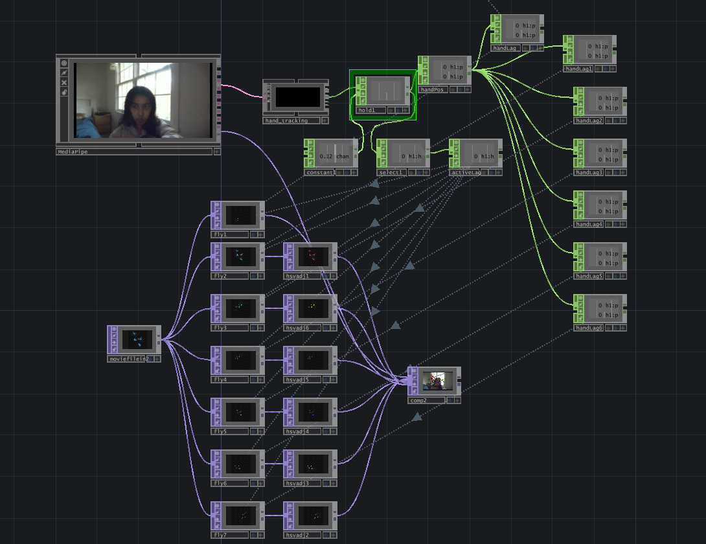
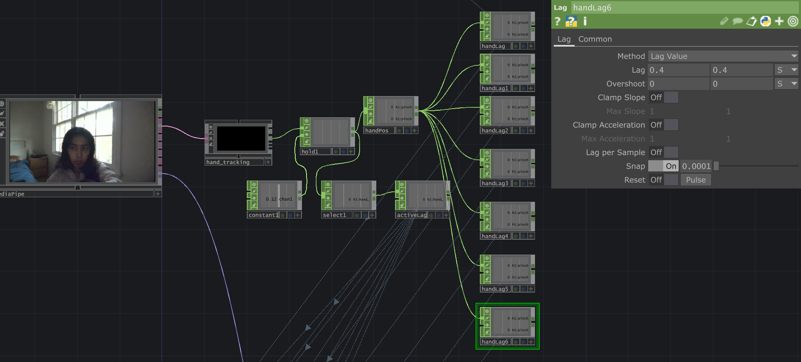
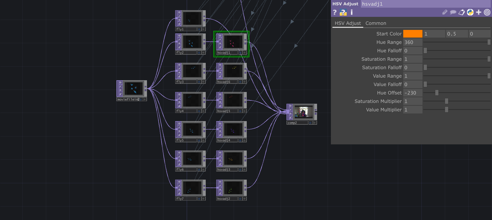

I ran through multiple iterations to refine the project and make it appear more immersive and natural.
Butterfly Garden
Making a group of butterflies with programmed diversity in movement, scale, and lag follow a flower a guest holds.
A MediaPipe + TouchDesigner hand tracking project.
What I Tested and Iterated On


01
MediaPipe
I initially tried tracking the flower using it's distinct maroon colour, but shadows and lighting made it difficult to consistently detect blobs. I then moved to MediaPipe handtracking and made the flowers appear at a higher Y-offset to resemble following the flowers and not the hand holding them.
02
Making the butterflies feel independent
I experimented with different sine and cosine frequencies, phase offsets, amplitudes, and positional offsets for each butterfly. This gave each one a distinct movement pattern while keeping the overall motion soft and continuous.
03
Natural Variety
I adjusted HSL values and rotation to allow for more diversity in the butterfly images.
04
Transitioning from wandering to attraction
I used the hand-active signal to blend between two behaviors: autonomous wandering and movement toward the flower. I also experimented with smoothing the hand-tracking signal to reduce abrupt changes in position.
05
Following without becoming attached
I experimented with different following delays and independent positional drift. Each butterfly could respond at a different speed, with some approaching quickly and others trailing behind.
06
Adding a sense of depth
I explored continuously varying each butterfly's scale at a different speed and rhythm. The intention was to create a subtle impression of depth without introducing a full 3D scene.
TouchDesigner Preview
Some screenshots!


